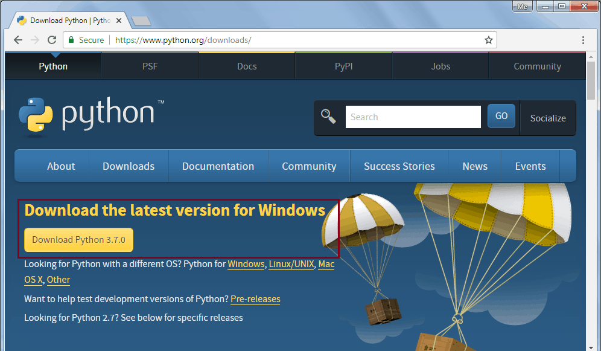
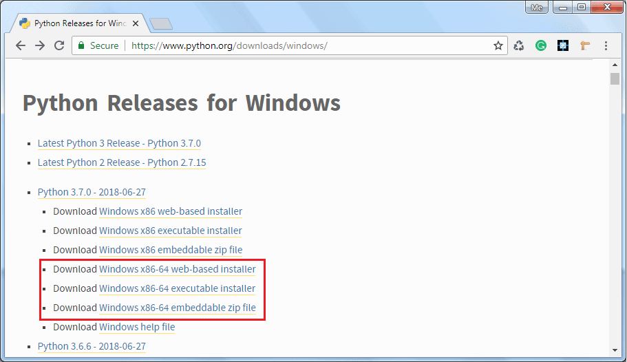
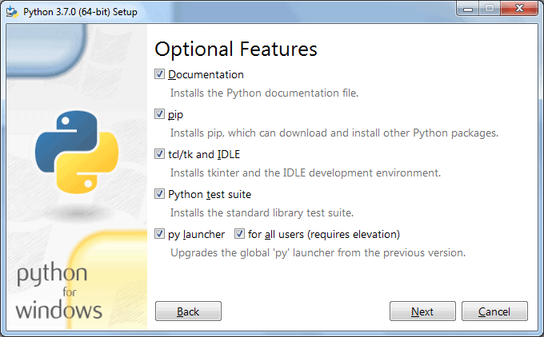
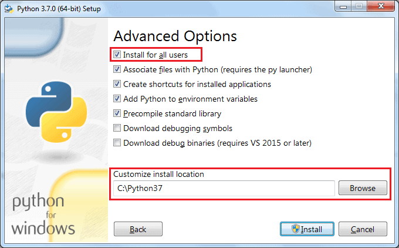
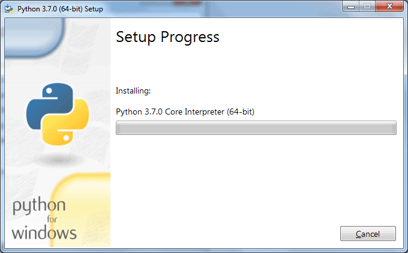
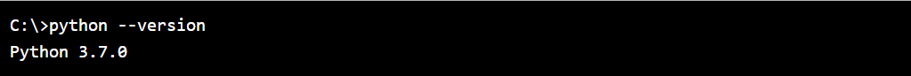

Please hold on for a moment...
Installing Python and OpenCV
To install Python on your local machine, get a copy of the standard distribution of Python software from here based on your operating system, hardware architecture and version of your local machine.
Install Python on Windows
To install Python on a Windows platform, you need to download the installer. A web-based installer, executable installer and embeddable zip files are available to install Python on Windows. Click here and click on the Download Python 3.7.0 button as shown below. (3.7.0 is the latest version as of this writing.)
This will download python-3.7.0.exe for 32 bit. For the 64 bit installer, go here to and select the appropriate 64 bit installer, as shown below.

Download the Windows x86-64 executable installer and double click on it to start the python installation wizard as shown below.

Installation is a simple wizard-based process. As you can see in the above figure, the default installation folder will be C:\ Users\ {UserName}\ AppData\ Local\Programs\ Python\ Python37 for Python 3.7.0 64 bit. Check the Add Python 3.7 to PATH checkbox, so that you can execute python scripts from any path. You may choose the installation folder or feature by clicking on Customize installation. This will go to the next step of optional features, as shown below.

Click Next to continue.

In Advanced Options, select the Install for all users option so that any user of your local machine can execute Python scripts. Also, choose the installation folder to make a shorter path for Python executable (something like C:\python37), keeping the rest of the choices to default and finally click on the Install button.

After successful installation, you can check the Python installation by opening a command prompt and type python --version or python -V and press Enter. If Python installed successfully then it will display the installed version.

Install Python on Mac OS X
You can install Python by downloading official installer from downloads/mac-ox page. Download the latest version of Python under the heading Python Releases for Mac OS X. Double click on the installer file to start the installation wizard.
On the installation wizard, click on Continue a few times until you're asked to agree to the software license agreement, click on Agree and finish the installation.
Install Python on Linux
Most of Linux distributions come with Python already installed. However, the Python 2.x version is incorporated in many of them. To check if Python 3.x is available, run the following command in the Linux terminal:
If available, it will return the path to the Python3 executable as /usr/local/bin/python3.
To install Python on Ubuntu 18.04, Ubuntu 20.04 and above, execute the following commands: